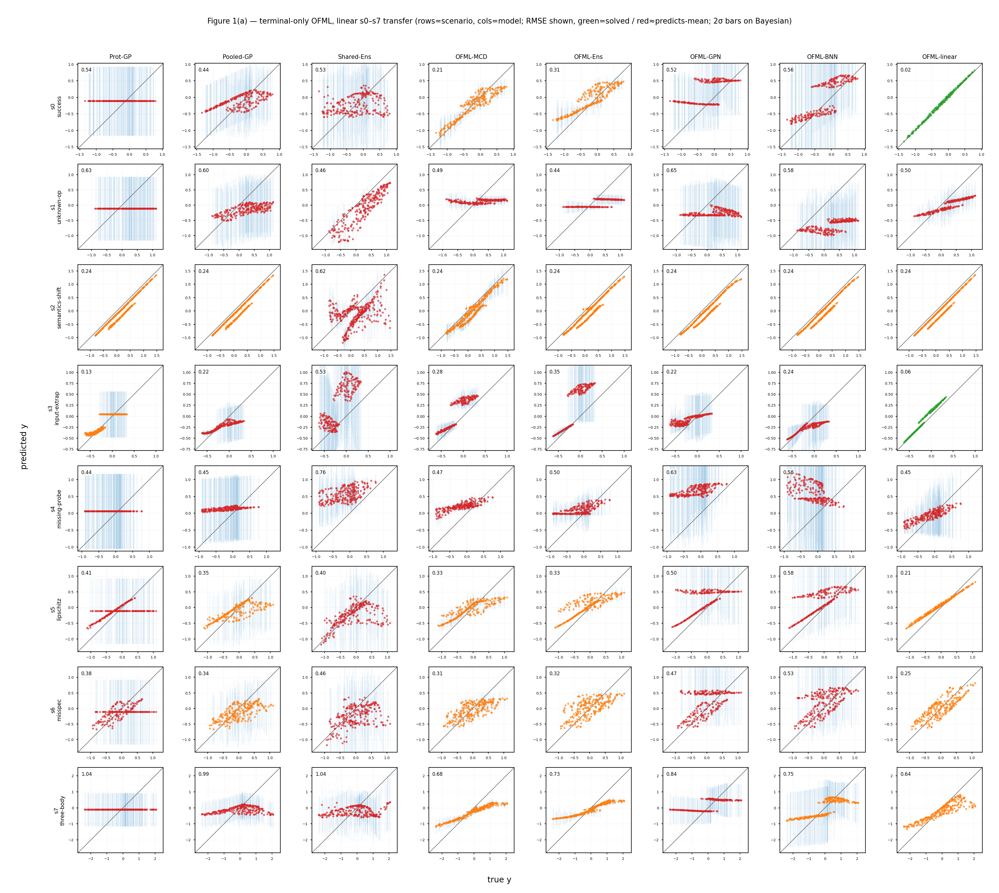

Claim 1 · composition helps transfer
An existence proof of structured terminal-only transfer. We ask whether operation knowledge learned on source protocols can be recombined zero-shot onto an unseen target (s0) that merely composes the same operations in a different order. The composed network OFML-linear solves s0 at macro NRMSE 0.042 (self-scale normalized), showing that latent recombination is near-perfect on average. In contrast, the order-blind count descriptor Shared-Ens cannot distinguish two targets with the same count but different order, predicting the average of the two and pinning to the aliasing floor (NRMSE ≈1.3). However, the 3-restart ensemble of OFML-linear converges to the same solution and its predictive variance nearly vanishes (2σ coverage 0%) = overconfidence, which we state honestly.

OFML-linear hugs the diagonal (the regime where latent recombination is essential). The order-blind Shared-Ens predicts the two differently-ordered targets identically at s0, so its point cloud spreads horizontally = the aliasing floor. Click to enlarge.If a protocol is treated as a composition of shared operation modules rather than a category or an operation-count descriptor, then operation knowledge learned on source can be recombined onto an unseen target — this is the existence proof of Claim 1, "composition helps transfer." Since s0 is an identifiable recombination satisfying identifiability residual \(r^{\mathrm{id}}=0\) (\(\ker\Phi\subseteq\ker\Psi\); see the Φ/Ψ audit), transfer should in theory succeed. This figure confirms empirically that this prediction holds (the composed network is near-perfect, the order-blind baseline is at the floor) using three metrics: macro NRMSE, 2σ coverage, and predictive std.
Each method is trained on 9 common source protocols (observing only the terminal \(y\)) and predicts the 2 s0 targets zero-shot. The 2 s0 targets have the same operation multiset with only the order reversed (A B C M O and C B A M O), exposing order-blind aliasing. Source has 30 points each (per_source=30, training noise \(\sigma=0.02\), 270 points total), and test has 120 points per target (n_test=120, noiseless = ground truth). The statistical unit is 12 seeds. The grid columns (Figure 3a) are 8 methods, but the table on this page narrows to 3 representative models — the capacity-matched composed OFML-linear, the order-blind count Shared-Ens, and the composed ensemble OFML-Ens — to isolate structure alone. All metrics are macro NRMSE (normalized by each target's self-scale; raw RMSE is not used).
Honest note: the uncertainty of OFML-linear is given by the variance of the 3-restart ensemble, but because s0 is identifiable and the minimizer is effectively unique, the 3 members converge to nearly the same solution and the predictive std ≈0. As a result, a 2σ coverage of 0% arises (= the error is nearly 0, yet the interval degenerates and "misses" the truth), an overconfidence. We emphasize that even though the mean prediction is near-perfect, the calibration is broken.
| Model | Structure | Key settings | Zero-shot behavior |
|---|---|---|---|
OFML-linear | Composed network capacity-matched to the true linear operation family (composition of area-preserving affine modules + a linear readout) | latent_dim=10, hidden=32, 3-restart ensemble | Composes operation modules in target order = transfer by latent recombination |
Shared-Ens | 5-member deep ensemble based on the operation-count descriptor (order-blind = byte-identical predictions for differently-ordered targets) | hidden=32, 300 epochs, y standardized | Count features only = predicts the average of the two differently-ordered targets (floor) |
OFML-Ens | 5-member ensemble of the composed network TerminalOnlyOFML (composing a latent module per operation type) | latent_dim=10, hidden=32, 400 epochs | Zero-shot transfer via composed modules (large training capacity) |
All metrics are macro NRMSE. We normalize by the self-scale \(s_p=\sqrt{\operatorname{mean}_x(f_p-\bar f_p)^2}\) of target \(p\) and macro-average over the \(P=2\) s0 targets. As calibration metrics we also report the 2σ coverage and the mean predictive std. \[ \NRMSE=\sqrt{\frac1P\sum_{p}\frac{\operatorname{mean}_x(\mu_p-f_p)^2}{s_p^2}},\quad \mathrm{cov}_{2\sigma}=\operatorname{mean}_{p,x}\mathbf{1}\!\left[\,|\mu-f|\le 2\hat\sigma(x)\,\right],\quad \bar\sigma=\operatorname{mean}_{p,x}\hat\sigma(x). \] Here \(\mu\) is the predictive mean, \(f\) is the ground truth, and \(\hat\sigma\) is the ensemble predictive std. The nominal level of \(\mathrm{cov}_{2\sigma}\) is about 95% (approximately normal); falling well below it means overconfidence, and rising well above it means conservatism.
The common source has 9 protocols (singletons + all pairs in both orders). The s0 targets are 2 protocols with the same count but different order, indistinguishable without seeing the order (instead of 3 seeds, this run uses 12 seeds, training 30 points/source with \(\sigma=0.02\), test 120 points/target, noiseless).
| Element | Value | Property |
|---|---|---|
| Source training | 30 points/source (per_source=30, 9 protocols = 270 total) | With noise \(\sigma=0.02\) |
| test | 120 points/target (n_test=120) | Noiseless (ground truth) |
| Target observation (cost 0) | None (zero-shot) | Recombine from source only |
| seed | 12 seeds (primary statistical unit) | Report mean ± standard deviation |
Hovering over a module type highlights the same shared operation across all protocols (= weight sharing). This visualizes that the 2 s0 targets are order variants of the same operation set — that is, "indistinguishable without seeing the order."
s0 parity — composition recombines near-perfectly. The capacity-matched OFML-linear solves s0 almost perfectly at macro NRMSE 0.042 ± 0.005 (hugging the diagonal). The composed ensemble OFML-Ens is at 1.158 ± 0.043, and the order-blind count Shared-Ens pins to the aliasing floor at 1.300 ± 0.048 (predicting the two differently-ordered targets identically = the average of the two). The overwhelming advantage of OFML-linear shows that s0 is identifiable (\(r^{\mathrm{id}}=0\)) and only a composed network capacity-matched to the true linear operation family can realize latent recombination.
| Model | Macro NRMSE | 2σ coverage | pred_std |
|---|---|---|---|
| OFML-linear | 0.042 ± 0.005 | 0.0% | ≈0.000 |
| OFML-Ens | 1.158 ± 0.043 | 40.0% | 0.157 |
| Shared-Ens | 1.300 ± 0.048 | 95.8% | 0.557 |
Coverage is not simply "good or bad": the 2σ coverage of 0% for OFML-linear is overconfidence with small error but a degenerate predictive variance (the 3 restarts converge to the same solution), whereas the 95.8% of Shared-Ens is calibrated as nominal, but only because, being order-blind, it predicts the floor (the average of both targets) together with a wide std, so the mean prediction itself is wrong. OFML-Ens (40%) is in between. To avoid conflating calibration with accuracy, we take NRMSE as the primary metric.
Whole grid (s0–s7 average). Even in the average macro NRMSE over the 8 scenarios of the linear family, OFML-linear is best, confirming that composition leads on learnable stressors beyond s0 as well.
| Model | s0–s7 average macro NRMSE |
|---|---|
| OFML-linear | 0.795 |
| OFML-Ens | 1.178 |
| Shared-Ens | 1.733 |
The grid average is worse than s0 parity because it includes honest failures where identifiability breaks, such as s1 (unseen operation) and s7 (three-body interaction), but composition still outperforms non-composition. See Table 1 (C1–C6) for the breakdown of individual failures, and Figure 3b (order) and Figure 3c (count) for the sharp separation against order and count descriptors.
That OFML-linear solves s0 at macro NRMSE 0.042 on the linear family is an existence proof that, in a regime where operation order and composition are essential and the structure is identifiable, composition greatly outperforms non-compositional baselines, and it directly supports Claim 1. That s0 is identifiable (\(r^{\mathrm{id}}=0\), \(\ker\Phi\subseteq\ker\Psi\)) is the precondition for transfer success, and the audit that measures this rank relation directly at the true \(\theta\) is the Φ/Ψ identifiability audit. In contrast, the order-blind count Shared-Ens cannot in principle distinguish same-count, differently-ordered targets and pins to the aliasing floor = the limit of terminal-only descriptors (Claim 1).
This figure avoids overclaiming and also states the honest limitations: the 2σ coverage of 0% for OFML-linear is the pitfall (overconfidence) of using ensemble variance as uncertainty in an identifiable regime, and without active observation or Bayesian calibration the uncertainty cannot be trusted. For settings that show the sharp separation of composition together with calibration, see Figure 3b and Figure 3c; for the integration of cost-indexed forward transfer plus adaptation, see Figure 2. Honest failures (unseen operation s1, three-body s7, etc.) are treated as the identifiability limit of terminal-only in Claim 1.
The success of s0 parity corresponds to the identifiability condition of the main theorem. The existence proof that composition transfers relies on the linear rank condition \(r^{\mathrm{id}}=0\iff\ker\Phi\subseteq\ker\Psi\) (Proposition 4), and s0 is identifiable at \(r^{\mathrm{id}}=0\), so transfer succeeds (the direct numerical audit is the Φ/Ψ audit). That knowledge transfer becomes empirically meaningful when identifiable corresponds to Assumption 8 (transfer diagnostics C1–C5). For targets where identifiability breaks, directly and actively observing the terminal can recover terminal-response consistency (Theorem 3 and Proposition 5).